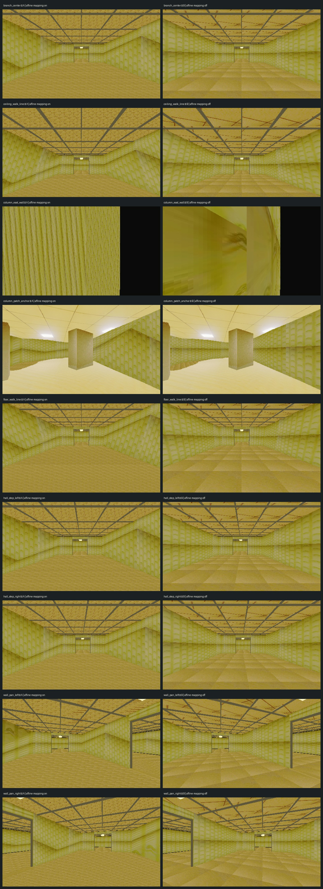

A preserves the pinned URSC affine texture mapping. B disables only affine mapping. Both keep nearest sampling and vertex snap intensity 1. The room, UVs, camera poses, and streamed layout are matched. ODiff records changed pixels; it does not score image quality.
Operator review selected B after a live walkthrough. Affine mapping off is now the project default.
Rendered default check: 0.0000% changed pixels from the captured affine-off reference; repeat-noise ceiling 0.0000%. Matches within noise: True.
Maximum repeated-control noise: 0.0000%. Differences at or below this ceiling are inconclusive.
Evidence report · Commands · Metrics JSON · Default render check · Source hashes

| View | Surfaces | ODiff changed pixels | Compared with repeat noise |
|---|---|---|---|
| branch_center | wall, floor, ceiling | 7.7600% | above noise |
| ceiling_walk_line | ceiling, wall | 8.7900% | above noise |
| column_east_wall | wall, floor, ceiling | 25.8400% | above noise |
| column_patch_anchor | column, wall, floor, ceiling | 4.0000% | above noise |
| floor_walk_line | floor, wall | 6.6700% | above noise |
| hall_step_left | wall, floor, ceiling | 7.5900% | above noise |
| hall_step_right | wall, floor, ceiling | 7.9000% | above noise |
| wall_pan_left | wall, floor, ceiling | 6.7000% | above noise |
| wall_pan_right | wall, floor, ceiling | 5.8400% | above noise |
The operator selected B after a live walkthrough. The F7 comparison scene remains available to revisit profile A on surfaces where it may be useful. Treat the measurements as evidence, not an art-direction score.